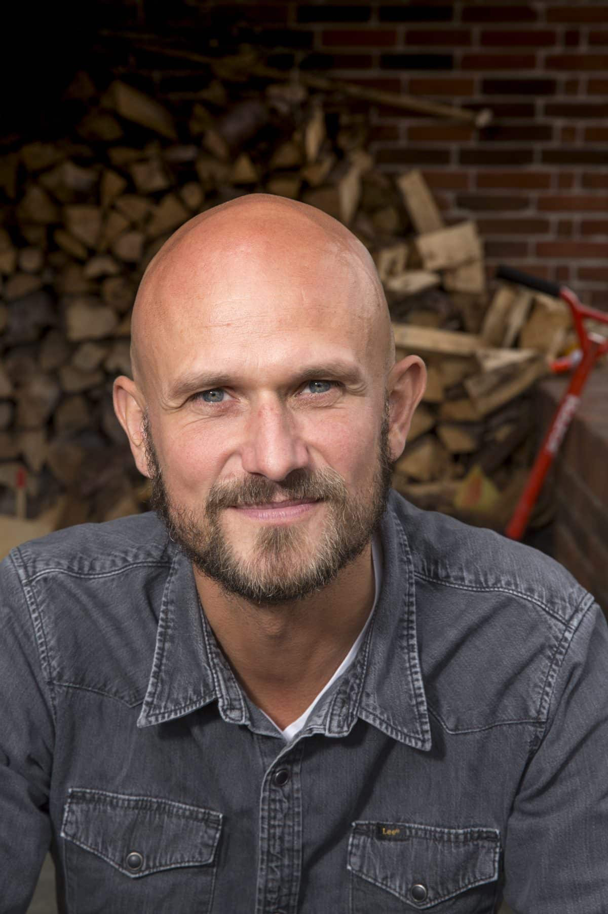

1 / 3


Vi ønsker at du får noget med hjem. Vi ønsker at du oplever dig tryg og inspireret ved at deltage i vores arrangementer. Det skal være brugbart for dig i dit liv at være medlem hos Odense Højskoleforening. Det skal være til en pris hvor alle kan være med. Den måde vi konkret gerne vil opnå det er hovedsageligt via vores inspirations/foredrags sammenkomster

Hos Odense Højskoleforening er vores medlemmer vigtige. Det er dig som medlem, der gør forskellen.

“Jeg er meget glad for det fælleskab jeg har fået ved at være medlem af Odense Højskoleforening”

““Højskoleforeningens forskellige og spændende arrangementer giver os mange gode oplevelser og nye venner”

“Det er en fornøjelse at mærke hvordan de grundtvigske idéer og tankegange stadig har fodfæste den dag i dag”